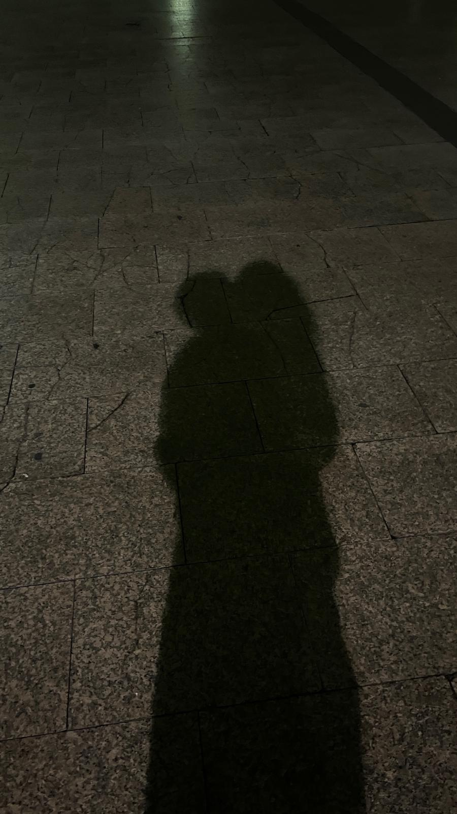
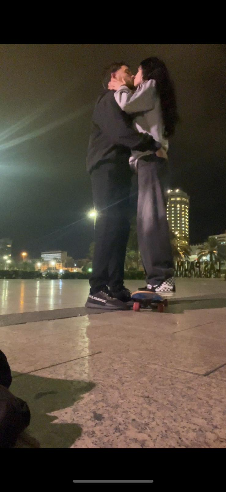
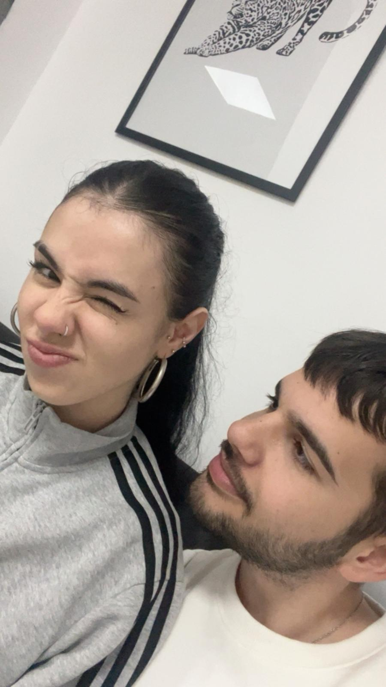
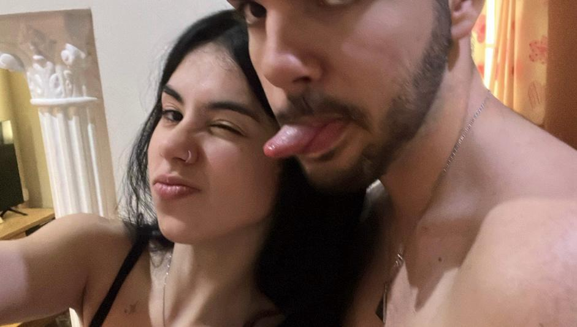
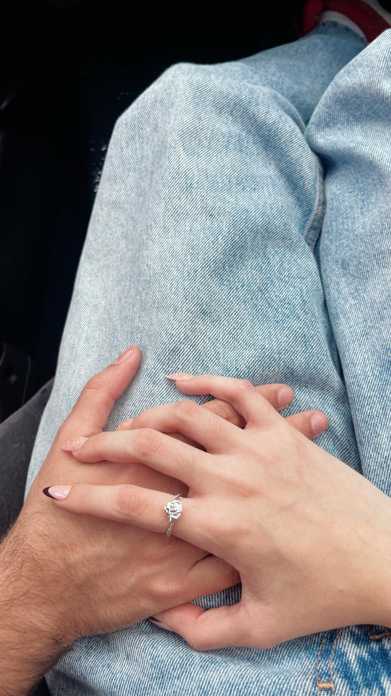
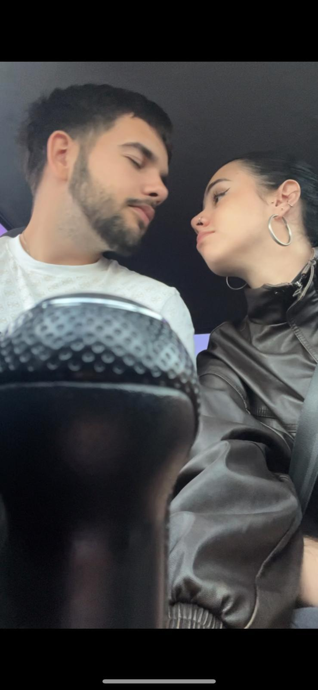
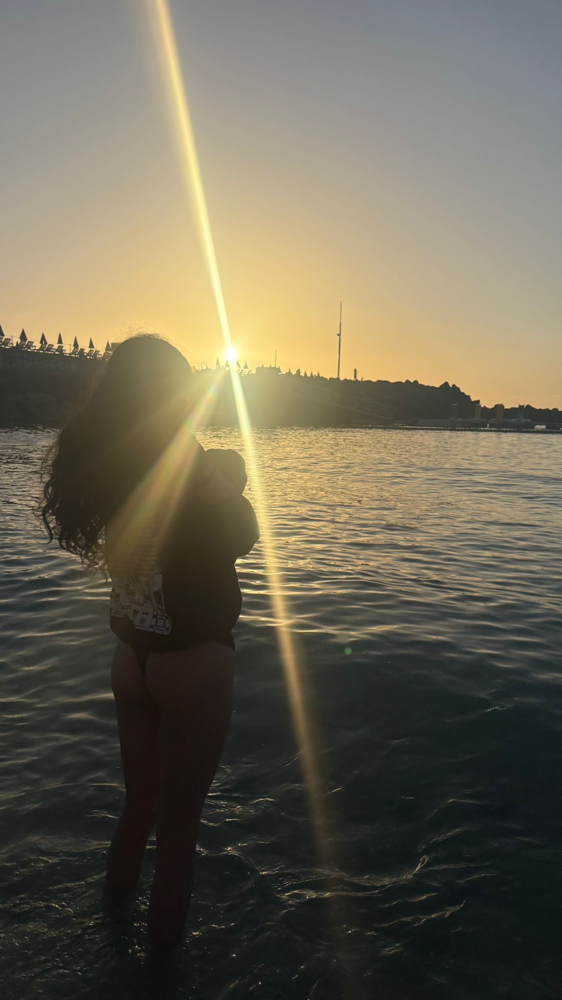
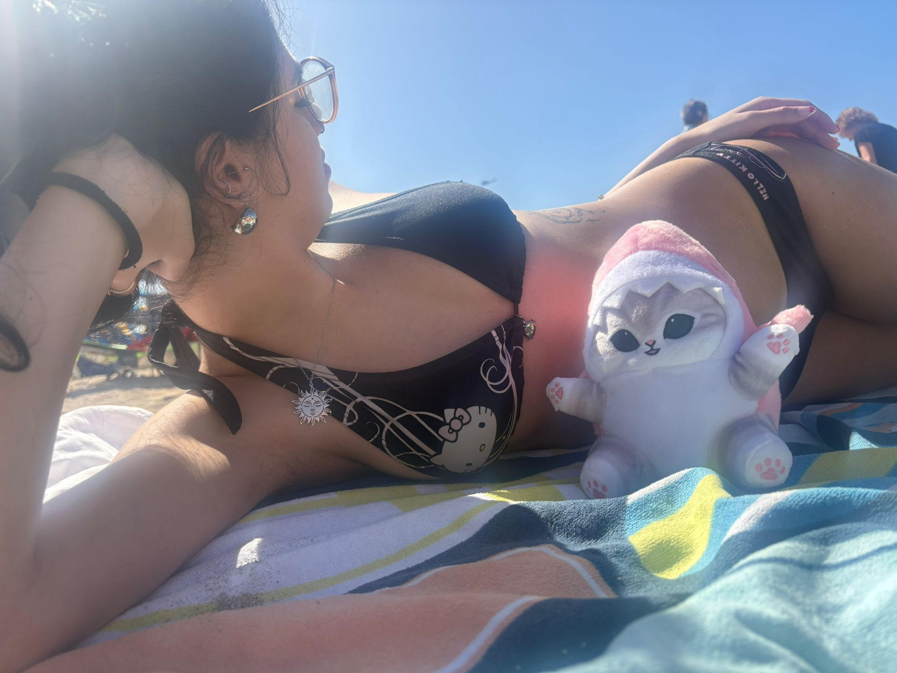
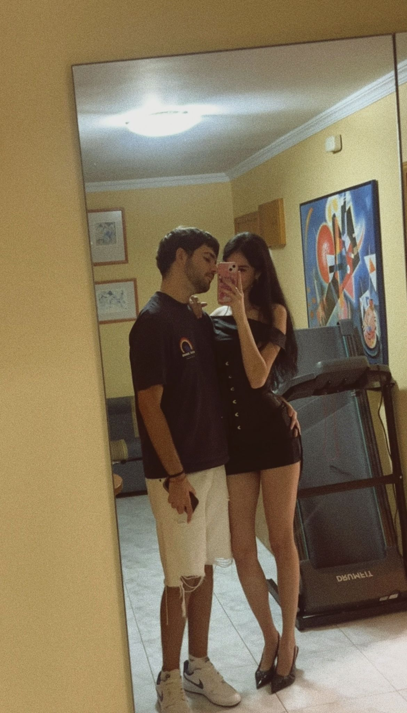
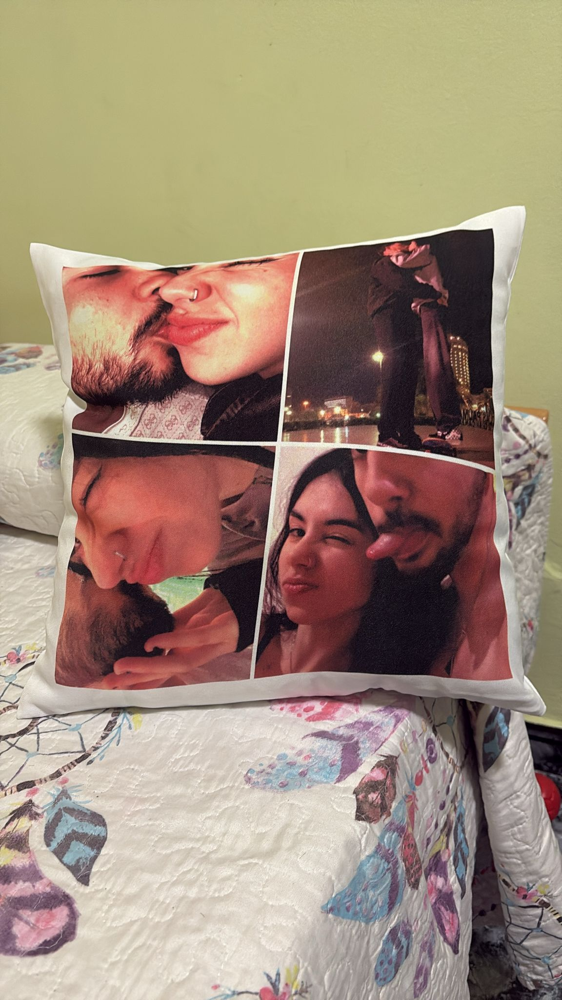

Carta de los 5 Meses.
Una cosa que siempre me pregunto cuando te escribo las cartas es; ¿Por donde empiezo? Y ¿Como puedo acabar las cartas?, hasta hoy que encontre la manera de poder expresarme.
En esta ocación vamos a comenzar hablando sobre como es mi estrellita y el porque me enamore de ti, En primer lugar mi estrellita prechiocha, es mi princesa, hermosa con cara de angel y mirada encantadora, cuya mirada es preciosa y acogedora, por no hablar de su preciosa sonrisa que me vuelve loco, y sus preciosos dientes que por suerte no estan afilados, en fin tiene una cara preciosa y una sonrisa inigualable, por no decir el cuerpo de modelo que tiene y su preciosa voz de cantante, sus preciosas manos que sostiene mi anillo. Y podria estar así toda la vida describiendo a la persona que día a día me hace feliz.
Por otra parte...
Tenemos su personalidad, la cual me encanta (aunque puede ser un poco bipolar). La cual varía en ser una princesa muy contenta, muy amigable, muy muy muy cariñosa, bastante protectora, un poco celocina, muy encantadora y algo que me gusta de su personalidad es como cuida a la gente que quiere y como las protege de los cualquier tipo de ofensa. Y como dije anteriormente me podría tirar aquí escribiendo cosas me encanta de mi futura mujer toda la vida, pero vamos a pasar con lo importante de la carta.
¡Con lo importante? Bueno mas o menos...
Ya que siendo sincero todo lo que tenga que verse relacionado con la mi estrellita es importante....
Amor, princhecha, estrellita, mi vida, mi mujer, mi todo, esta carta unicamente quiero hacerla para decirte y explicarte lo importante y lo mucho que te quiero, lo tanto que te amo, ya que a dia 27/03/2026 juro y te prometo que voy a garantizar que nunca más en tu vida pases un día triste, se que eso es imposible porque nos conocemos pero yo te juro que nunca te voy a dejar sola, quiero y necesito que tanto para mi como para ti podamos ser pilares fundamentales en nuestra vida, que cuando otros pilares por alrededor se derrumben tengamos nuestro pilar para apoyarnos y alegrarnos la vida, que ese pilar sea nuestro lugar seguro y nuestro lugar preciado. Tambien quiero que sepas que tus problemas y tus deslizes son los mios y si tu te caes voy a estar yo antes en el suelo para parar tu caida, ya que seria lo minimo que haría para que no te hagas ningun tipo de daño. Espero que en un futuro no muy lejano, poder despertarme alado tuya y poder convivir uno alado del otro (aunque creo que a las 2 semanas ya tendria 20 moratones de mordidas, ehhh Premio o Premio???), poder abrazarte por las noches, y poder acompañarte en los momentos malos y triste que te sucedan en la vida, mientras te doy abracitos y te preparos unos creeps. Se que no soy un poeta y tendre 200 fallos ortográficos, pero bueno unicamente expreso mi amor incondicional hacía tí mi prechiocha princhecha, quiero que te quede claro que eres la persona que más me importa y con la persona que habita en mi cabeza las 24h del día, podría estar así escribiendo toda mi vida, ya que cuando escucho tu voz, cuando veo tus mensajes solo me sale amor incondicional hacía ti princesa. Por esto y mucho más quiero que sepas que eres lo mejor que me ha podido pasar en la vida y que siempre te voy a mimar como si fueras mi bebe prechiocha y pequeñita.
Y para concluir amor...
Te amo con todo mi corazón y como nunca he amado a nadie, quiero que sepas que te quiero muchoooooooooooooooo y que te amo muchisiiiiiiiiimo, preciosa estellita, espero que te guste la carta, te prometo que no sera la ultima porque aun me falta muchas más cosas que decirte y nos queda muchas más experiencias por vivir juntos...
Te quiereeee muchisimo y te ama muchooooo más tu prechiocho niño pequeñito.❤️
Nuestros meses de relación
- 27/10/2025 Nuestro primer beso y el empezar.
- 27/11/2025 Nuestro primer mes no oficial.
- 27/12/2025 Nuestra confirmación en el parque Sur(Un dia genial).
- 27/01/2026 Nuestro primer mes de relación(Recreando el primer día).
- 14/02/2026 Un día maravilloso en la playa de Amadores (Aunque el novio fastidio el final del dia 😢)
- ---------- Hacía tiempo que no actualizaba la página la verdad y eso que hay cosas para actualizar preciosidad...
- 27/01/2026 Ya hace 5 meses desde que empezo nuestra pequeña historia de amor, y cada vez soy mucho más feliz.
- ../../20.. Los días/meses/años que nos quedan de experiencias(Te quiero mucho).
Galería









Y esta es mi preciosa carta de San Valentín
Esta carta es para recordarte que no solo eres mi novia, que eres la persona que quiero ver todos los dias, con la cual sueño toda las noches y en un futuro mi esposa.
Estos casi 4 meses han sido los mejores de mi vida, y como te digo cada vez que te escribo una carta, espero que esto dure para siempre, eres una de las pocas personas que me hacen feliz dia a dia, aunque tengamos nuestros encontronazos y nuestras complicaciones/discurciones.
Gracias por cada detalle, cada mensaje bonito (aunque aveces eres un poco borde(es broma (te quiero))), cada momento que me haces reir y cada expresion bonita que tienes conmigo, gracias por escucharme y por comprenderme (no siempre(es broma(no me quite las custodia de mis hijos))).
No tengo regalos, flores, cosas para agradecerte todo lo que haces por mi aunque creas que es poco es lo más bonito que alguien haya hecho por mi.
Y ahora me toca recibir un poco a mi, aunque este es el primer San Valentin que disfruto acompañado por una magnifica persona como tú, por mi culpa lo termine fastidiando, te pido perdon y te prometo que te lo compensare, quiero que sepas que eres lo más especial de mi vida y quiero que te pase todo lo mejor del mundo.
Por último y no menos importante te quiero decir 2 cosas:
1. Te quiero mucho, y quieros que sepas que siempre te querre
2. Espero tenerte para el resto de mi vida y que nada ni nadie nos separe, siempre tendras un hueco en mi corazon porque te lo has ganado.
Te quiero mucho amor, eres lo más bonito que he visto, feliz San Valentin ❤️.
El regalo que me hiciste ❤️:

El regalo que te hice ❤️:
NO HAY FOTO PORQUE NO LE SACASTE....................

13 razones por las que te amo
- Porque siempre estas cuando te necesito.
- Porque me escuchas cuando estoy mal.
- Porque te preocupas por mi.
- Porque contigo el tiempo se me va volando.
- Porque gracias a ti encontre la felicidad.
- Porque contigo todo es más facil.
- Porque sabes perdonarme.
- Porque sabes tratarme bien y cuidarme.
- Porque sabes darme cariño a mi y a mi barra de pan.
- Por apoyarme en los momentos que estoy mal y darme todo el cariño del mundo.
- Porque vas a ser la futura madre de mis hijos.
- Porque cada mes que pasamos, veo más claro, que eres la persona con la que quiero pasar el resto de mi vida.
- Por todo eso y por mucho más te quiero y siempre te querre.
Elige cuál es tu regalo sorpresa
Solo puedes abrir uno de los dos regalos, elige bien mi amor.
Hay una opción bonita y otra opción con un tono más elevado.
Y no te robo más tiempo amor, pero una cosa más.
Gracias por existir y por compartir tu tiempo conmigo.